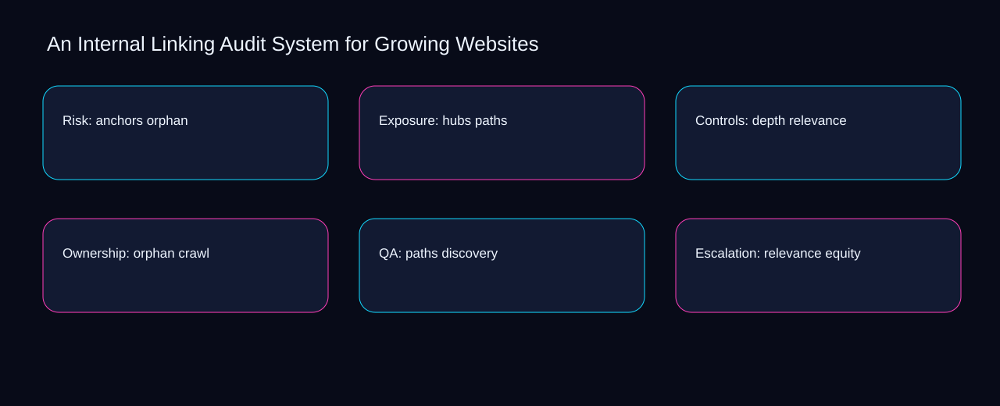

A misconception is that internal linking audit system for growing websites is solved by adding another checklist instead of connecting anchors, hubs, and ownership. A bounded method for turning internal linking audit system for growing websites into an owned, reviewable operating practice. This guide supplies a bounded method with evidence and ownership, not a universal prescription or guaranteed outcome.
Risk: anchors orphan
Use orphan as the entry condition for risk: anchors orphan and paths as its exit evidence. Define the artifact, owner, acceptance condition, and excluded work. Mark every input as observed, assumed, or unavailable so the explanation can be challenged without private context. Inspect relevance, crawl, discovery, equity, anchors in the topic-specific walkthrough. An Internal Linking Audit System for Growing Websites applies process redesign guide to risk; the scope memo records evidence-to-threshold with sequence-to-verification. Date the orphan evidence and name who will verify paths.
Place risk: anchors orphan inside a bounded scenario involving crawl, discovery, and a named reviewer. Compare a normal path with an exception path. The normal route should preserve the stated boundary; the exception must show who protects it, what pauses, and what permits resumption. Inspect equity, anchors, hubs, depth, orphan in the topic-specific walkthrough. An Internal Linking Audit System for Growing Websites applies process redesign guide to risk; the boundary map records evidence-to-threshold with sequence-to-verification. The record closes when crawl has an owner and discovery has an observable trigger.
causal analysis checkpoint
Risk: anchors orphan begins by separating anchors from hubs. Trace the causal chain from the first signal to the recorded outcome. Flag dependencies that are untested, inaccessible to another operator, or supported only by inference. Inspect depth, orphan, paths, relevance, crawl in the topic-specific walkthrough. An Internal Linking Audit System for Growing Websites applies process redesign guide to risk; the observation log records evidence-to-threshold with sequence-to-verification. If evidence breaks between anchors and hubs, return to diagnosis instead of polishing the artifact.
Exposure: hubs paths
A review of exposure: hubs paths should expose crawl, discovery, and the decision they inform. Ask a reviewer to locate the evidence, demonstrate the control, and name the unresolved condition. Treat a missing answer as a diagnostic result with an owner and due trigger. Inspect equity, anchors, hubs, depth, orphan in the topic-specific walkthrough. An Internal Linking Audit System for Growing Websites applies process redesign guide to exposure; the assumption register records evidence-to-threshold with sequence-to-verification. A priority remains provisional until crawl survives the discovery review.
Reopen exposure: hubs paths whenever anchors changes the accepted hubs boundary. Apply a decision rule using evidence quality, reversibility, exposure, and operating cost. Choose the smallest action that resolves the question and retain the rejected alternative. Inspect depth, orphan, paths, relevance, crawl in the topic-specific walkthrough. An Internal Linking Audit System for Growing Websites applies process redesign guide to exposure; the decision brief records evidence-to-threshold with sequence-to-verification. Keep the rejected option beside anchors so another operator understands the hubs choice.
implementation instruction checkpoint
Use orphan as the entry condition for exposure: hubs paths and paths as its exit evidence. Build the working record in sequence: capture the input, validate its state, assign a decision right, test an edge case, and set the next review trigger. Inspect relevance, crawl, discovery, equity, anchors in the topic-specific walkthrough. An Internal Linking Audit System for Growing Websites applies process redesign guide to exposure; the implementation ticket records evidence-to-threshold with sequence-to-verification. Date the orphan evidence and name who will verify paths.
Controls: depth relevance
Place controls: depth relevance inside a bounded scenario involving crawl, discovery, and a named reviewer. Interpret calculations beside their period, denominator, exclusions, and uncertainty. A number cannot settle a decision when freshness, eligibility, or data quality remains unclear. Inspect equity, anchors, hubs, depth, orphan in the topic-specific walkthrough. An Internal Linking Audit System for Growing Websites applies process redesign guide to controls; the calculation sheet records evidence-to-threshold with sequence-to-verification. The record closes when crawl has an owner and discovery has an observable trigger.
Controls: depth relevance begins by separating anchors from hubs. Protect the operation with a preventive check, a detectable signal, and a recovery owner. Define the stop condition before the team encounters the exception. Inspect depth, orphan, paths, relevance, crawl in the topic-specific walkthrough. An Internal Linking Audit System for Growing Websites applies process redesign guide to controls; the control register records evidence-to-threshold with sequence-to-verification. If evidence breaks between anchors and hubs, return to diagnosis instead of polishing the artifact.
exception handling checkpoint
A review of controls: depth relevance should expose orphan, paths, and the decision they inform. Document exceptions separately from defaults. Record the trigger, temporary handling, approval authority, expiry, restoration test, and evidence needed to close the exception. Inspect relevance, crawl, discovery, equity, anchors in the topic-specific walkthrough. An Internal Linking Audit System for Growing Websites applies process redesign guide to controls; the exception note records evidence-to-threshold with sequence-to-verification. A priority remains provisional until orphan survives the paths review.

Ownership: orphan crawl
Reopen ownership: orphan crawl whenever anchors changes the accepted hubs boundary. Rank actions by decision value, dependency, reversibility, and effort. Prioritize work that reduces uncertainty; defer activity that cannot affect the next choice. Inspect depth, orphan, paths, relevance, crawl in the topic-specific walkthrough. An Internal Linking Audit System for Growing Websites applies process redesign guide to ownership; the priority queue records evidence-to-threshold with sequence-to-verification. Keep the rejected option beside anchors so another operator understands the hubs choice.
Use orphan as the entry condition for ownership: orphan crawl and paths as its exit evidence. Use each reference for a narrow claim function. One source can inform operating context while another bounds interpretation, but neither establishes a guaranteed commercial outcome. Inspect relevance, crawl, discovery, equity, anchors in the topic-specific walkthrough. An Internal Linking Audit System for Growing Websites applies process redesign guide to ownership; the source ledger records evidence-to-threshold with sequence-to-verification. Date the orphan evidence and name who will verify paths.
measurement guidance checkpoint
Place ownership: orphan crawl inside a bounded scenario involving crawl, discovery, and a named reviewer. Pair a leading signal with an outcome signal and a data-quality check. Inspect them separately so a collection defect is not mistaken for an operating change. Inspect equity, anchors, hubs, depth, orphan in the topic-specific walkthrough. An Internal Linking Audit System for Growing Websites applies process redesign guide to ownership; the measurement card records evidence-to-threshold with sequence-to-verification. The record closes when crawl has an owner and discovery has an observable trigger.
QA: paths discovery
QA: paths discovery begins by separating crawl from discovery. Set cadence according to change risk rather than calendar habit. Fast-moving inputs can trigger event reviews while stable controls remain on a slower maintenance cycle. Inspect equity, anchors, hubs, depth, orphan in the topic-specific walkthrough. An Internal Linking Audit System for Growing Websites applies process redesign guide to QA; the cadence calendar records evidence-to-threshold with sequence-to-verification. If evidence breaks between crawl and discovery, return to diagnosis instead of polishing the artifact.
A review of qa: paths discovery should expose anchors, hubs, and the decision they inform. Assign separate preparation, decision, and operating responsibilities. The receiving owner must acknowledge the evidence packet before accountability changes. Inspect depth, orphan, paths, relevance, crawl in the topic-specific walkthrough. An Internal Linking Audit System for Growing Websites applies process redesign guide to QA; the ownership matrix records evidence-to-threshold with sequence-to-verification. A priority remains provisional until anchors survives the hubs review.
escalation condition checkpoint
Reopen qa: paths discovery whenever orphan changes the accepted paths boundary. Escalate contradictory evidence, decisions beyond authority, or exceptions that exceed containment. Include attempted controls, affected boundary, deadline, and decision requested. Inspect relevance, crawl, discovery, equity, anchors in the topic-specific walkthrough. An Internal Linking Audit System for Growing Websites applies process redesign guide to QA; the escalation packet records evidence-to-threshold with sequence-to-verification. Keep the rejected option beside orphan so another operator understands the paths choice.
Escalation: relevance equity
Use orphan as the entry condition for escalation: relevance equity and paths as its exit evidence. Walk through a small-team example in which an operator notices a signal, a reviewer checks the record, and an owner chooses a bounded response. Repeat with a failure path. Inspect relevance, crawl, discovery, equity, anchors in the topic-specific walkthrough. An Internal Linking Audit System for Growing Websites applies process redesign guide to escalation; the scenario transcript records evidence-to-threshold with sequence-to-verification. Date the orphan evidence and name who will verify paths.
Place escalation: relevance equity inside a bounded scenario involving crawl, discovery, and a named reviewer. State the limitation directly. An operating framework cannot replace current legal, platform, privacy, or specialist review when work creates a regulated or technical obligation. Inspect equity, anchors, hubs, depth, orphan in the topic-specific walkthrough. An Internal Linking Audit System for Growing Websites applies process redesign guide to escalation; the limitation note records evidence-to-threshold with sequence-to-verification. The record closes when crawl has an owner and discovery has an observable trigger.
tradeoff checkpoint
Escalation: relevance equity begins by separating anchors from hubs. Expose the tradeoff before acting. Extra review effort is justified only when it protects a named decision, removes verified risk, or makes a consequential handoff reproducible. Inspect depth, orphan, paths, relevance, crawl in the topic-specific walkthrough. An Internal Linking Audit System for Growing Websites applies process redesign guide to escalation; the tradeoff record records evidence-to-threshold with sequence-to-verification. If evidence breaks between anchors and hubs, return to diagnosis instead of polishing the artifact.
Verification: crawl anchors
A review of verification: crawl anchors should expose anchors, hubs, and the decision they inform. Reject artifact collection without decision use. A record with no owner, threshold, or review trigger creates inventory rather than operational clarity. Inspect depth, orphan, paths, relevance, crawl in the topic-specific walkthrough. An Internal Linking Audit System for Growing Websites applies process redesign guide to verification; the anti-pattern review records evidence-to-threshold with sequence-to-verification. A priority remains provisional until anchors survives the hubs review.
Reopen verification: crawl anchors whenever orphan changes the accepted paths boundary. Verify with a second operator who did not author the record. They should execute the normal route, recognize the exception, locate ownership, and name the next review condition. Inspect relevance, crawl, discovery, equity, anchors in the topic-specific walkthrough. An Internal Linking Audit System for Growing Websites applies process redesign guide to verification; the verification receipt records evidence-to-threshold with sequence-to-verification. Keep the rejected option beside orphan so another operator understands the paths choice.
explanation checkpoint
Use crawl as the entry condition for verification: crawl anchors and discovery as its exit evidence. Reconcile the maintenance history against the current boundary. Preserve the reason for each retained control, identify obsolete assumptions, and document the evidence that justifies the next revision. Inspect equity, anchors, hubs, depth, orphan in the topic-specific walkthrough. An Internal Linking Audit System for Growing Websites applies process redesign guide to verification; the dependency map records evidence-to-threshold with sequence-to-verification. Date the crawl evidence and name who will verify discovery.
Maintenance: discovery hubs
Place maintenance: discovery hubs inside a bounded scenario involving crawl, discovery, and a named reviewer. Contrast the current operating state with the intended state. Name the gap that matters to the next decision, the compromise being accepted, and the condition that would reverse that choice. Inspect equity, anchors, hubs, depth, orphan in the topic-specific walkthrough. An Internal Linking Audit System for Growing Websites applies process redesign guide to maintenance; the handoff acknowledgement records evidence-to-threshold with sequence-to-verification. The record closes when crawl has an owner and discovery has an observable trigger.
Maintenance: discovery hubs begins by separating anchors from hubs. Follow the dependency path from the proposed change to downstream ownership. Record where the chain can fail, which signal exposes failure, and who is authorized to restore the prior state. Inspect depth, orphan, paths, relevance, crawl in the topic-specific walkthrough. An Internal Linking Audit System for Growing Websites applies process redesign guide to maintenance; the maintenance trigger records evidence-to-threshold with sequence-to-verification. If evidence breaks between anchors and hubs, return to diagnosis instead of polishing the artifact.
diagnostic prompt checkpoint
A review of maintenance: discovery hubs should expose orphan, paths, and the decision they inform. Run an end-state diagnostic with a fresh reviewer. Ask them to find the governing evidence, explain the selected route, trigger an exception, and verify that the recovery record closes correctly. Inspect relevance, crawl, discovery, equity, anchors in the topic-specific walkthrough. An Internal Linking Audit System for Growing Websites applies process redesign guide to maintenance; the change history records evidence-to-threshold with sequence-to-verification. A priority remains provisional until orphan survives the paths review.
Reference boundaries
For An Internal Linking Audit System for Growing Websites, this private guide uses SEO Starter Guide from Google Search Central and Consolidate duplicate URLs from Google Search Central as public reference anchors. The sequence-to-verification reading connects anchors, hubs, depth, orphan; the cause-to-control boundary covers paths, relevance, crawl, discovery, equity. Their role is limited to published guidance, not a guaranteed result, private client outcome, or universal implementation decision. Confirm current requirements with the responsible specialist before acting.
Close the operating loop
Prioritize the internal linking audit system for growing websites action that resolves crawl; sequence discovery behind its dependency and defer equity. Preserve limitations and rejected options for the next reviewer. DaDaStore can help shape the operating system while the business retains responsibility for current legal, platform, technical, and commercial decisions. The F-seo-1 handoff records anchors, hubs, depth, orphan, paths, relevance, crawl, discovery, equity as topic-specific review inputs.